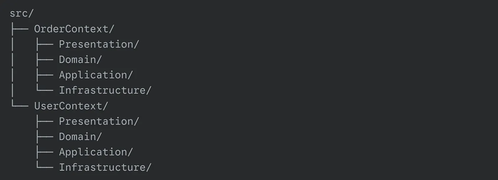
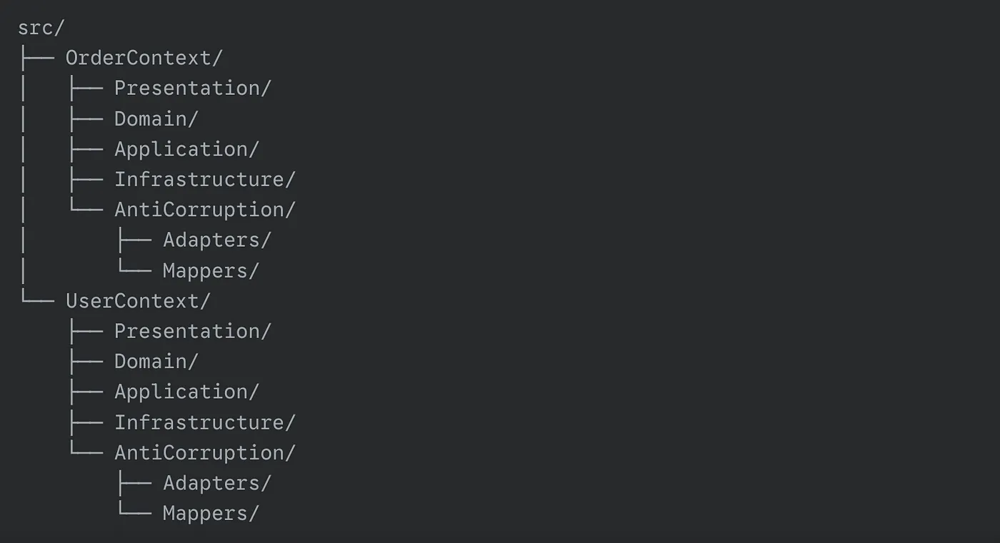

Introduction
In the previous article, "Pack your code right" we explored various approaches to organizing code, including monolithic and layered architectures, the principles of clean architecture, as well as the concept of Bounded Context in Domain-Driven Design (DDD). We learned that Bounded Context helps structure complex systems by dividing them into logical parts, each with its own domain model and clear, consistent rules.
Now that we understand how to identify and organize bounded contexts, it's time to delve into the next important aspect of DDD — communication between them. In real-world systems, bounded contexts rarely exist in isolation. To implement business processes and ensure system integrity, it is necessary to establish effective interaction between them. In this article, we will explore how bounded contexts can communicate with each other, what communication approaches exist, and how to choose the right one depending on your system's requirements. Let's continue our journey into the world of DDD to learn how to create not only well-structured but also harmoniously functioning systems.
Basic concepts
Communication between bounded contexts involves the exchange of data and the call functionality from one context by another. Such interaction can be either synchronous (direct request-response) or asynchronous (through events or messages), depending on the system's requirements:
- Performance: How quickly requests need to be processed.
- Fault tolerance: How the system should handle failures.
- Data consistency: How critical immediate consistency is.
Important: Poorly organized communication can lead to tight coupling between contexts, which contradicts the principles of DDD and complicates system maintenance and evolution.
In DDD, there are several key strategies for communication between bounded contexts, each with its own advantages, disadvantages, and use cases. These strategies help minimize coupling between contexts while maintaining system flexibility and scalability. In this article, we will examine each of these strategies in detail, their features, as well as examples of their use in real-world projects.
Examples of contexts
For clarity, all examples in the article will use the following contexts:
- UserContext: Manages user information (profiles, authentication, permissions).
- OrderContext: Manages orders (creation, processing, delivery).
These contexts will serve as the foundation for illustrating the communication strategies and patterns discussed throughout the article.
Strategies for integrating contexts
To avoid tight coupling, DDD employs the following approaches:
- Anti-Corruption Layer (ACL): A layer that isolates one context from another by translating data and requests between them. It protects the integrity of each context's model.
- Messages/Events: Asynchronous communication through events, where one context publishes events and others subscribe to them. This ensures loose coupling.
- API Gateway: A middleware layer used to facilitate interaction between contexts. It centralizes and simplifies communication.
- Shared Kernel: In rare cases where contexts need to interact closely, a shared portion with common models and functionality can be defined. This should be used as an exception rather than a rule, as it creates tight coupling between contexts.
These approaches help maintain the independence of bounded contexts while enabling effective communication and collaboration between them.
When is synchronous communication applicable?
Synchronous interaction (e.g., via REST API or gRPC) should be chosen in the following cases:
1. Immediate Data Consistency is Required
In some scenarios, business logic requires data to be consistent immediately. For example, when creating an order in an online store, it is necessary to immediately check the availability of the product in stock. If the product is out of stock, the order cannot be placed, and the user must be notified right away.
In such cases, synchronous communication between contexts becomes a necessary solution. Synchronous calls ensure that the data used for decision-making is up-to-date at the time of the operation. This is especially important in systems where delays or data discrepancies could lead to a poor user experience or financial losses.
2. Simplicity of Implementation is More Important Than Scalability
Synchronous communication is often chosen when the simplicity of implementation and system maintenance takes precedence over scalability. Synchronous calls are easier to design, test, and debug because they follow a linear execution logic: request → processing → response.
This approach is suitable for systems where the complexity of asynchronous communication (e.g., event-driven architectures) is not justified, and the primary goal is to deliver a straightforward and maintainable solution.
By choosing synchronous communication in these scenarios, you ensure immediate consistency and simplify development, but it's important to weigh these benefits against potential scalability challenges in the long term.
This makes synchronous communication ideal for:
- Small Systems or Teams with Limited Resources
- Projects where setting up complex asynchronous mechanisms might be overkill.
- Situations where avoiding additional complexity (e.g., managing queues, handling duplicate messages, ensuring idempotency) is a priority.
In small projects or during the early stages of development, this approach can significantly speed up implementation and reduce development costs.
3. Low Load and Minimal Latency Requirements
Synchronous communication can be an optimal solution in systems with low load, where the number of requests per second is small, and latency is not critical. For example:
- Systems managing internal company processes with a limited number of users.
- Applications where operations are performed infrequently.
- Real-time systems where the delay between request and response must be minimal.
In such cases, synchronous calls can provide sufficient performance without the need for complex asynchronous mechanisms, avoiding additional overhead.
Important: As the load increases, synchronous calls can become a bottleneck. Therefore, this approach requires careful analysis of both current and future system requirements.
By choosing synchronous communication in these scenarios, you can achieve simplicity and efficiency, but it's crucial to monitor system performance and be prepared to transition to more scalable solutions as the system grows.
4. Critically Important Operations
In certain domains, operations are mission-critical and require immediate confirmation. For example, in banking systems, every transaction must be confirmed instantly to prevent double-spending or other financial errors.
In such cases, synchronous communication between contexts (e.g., between the account management context and the transaction processing context) becomes a necessary condition for ensuring data integrity. Synchronous calls guarantee that:
- Each operation is executed only if all checks are successfully completed.
- Confirmation of the operation occurs instantly.
- Data remains consistent across all contexts.
This is especially critical in systems where errors or delays could lead to severe consequences, such as financial losses or violations of regulatory requirements.
By using synchronous communication for these critical operations, you ensure that the system behaves predictably and reliably, maintaining trust and compliance with business rules. However, it's essential to balance this approach with scalability considerations, as high-load systems may require additional optimizations or hybrid communication strategies.
When is asynchronous communication applicable?
Asynchronous Interaction (via Events, Queues, or Message Brokers) should be chosen in the following cases:
1. The System Must Be Resilient to Failures
Asynchronous communication is a key tool for building fault-tolerant systems. Unlike synchronous calls, where a failure in one context can bring the entire system to a halt, the asynchronous model allows errors to be isolated.
For example, if the one context is temporarily unavailable due to technical issues, the other context can continue operating by placing requests in a queue for later processing. This is especially important in distributed systems, where the failure of one component should not affect the availability of others.
Additionally, asynchronous communication enables the implementation of (retry) mechanisms and compensating transactions (e.g., the Saga pattern), which increases the overall reliability of the system.
By choosing asynchronous communication in such scenarios, you ensure that the system remains operational and resilient, even in the face of failures or temporary outages.
2. High Scalability is Required
Asynchronous systems are highly scalable, making them ideal for high-load applications. Unlike synchronous communication, where contexts block each other, the asynchronous model allows requests to be processed in parallel.
For example, in systems where thousands of users place orders simultaneously, asynchronous processing enables the distribution of load across multiple service instances. This is achieved through the use of message brokers (e.g., RabbitMQ, Kafka), which provide load balancing and horizontal scaling.
Thus, asynchronous communication not only improves performance but also allows the system to adapt to growing demands.
By leveraging asynchronous communication in such scenarios, you ensure that your system can handle increasing workloads efficiently, maintaining responsiveness and reliability even under heavy traffic.
3. Business Processes are Long-Running and Distributed
In complex business processes that involve multiple stages, asynchronous communication becomes indispensable. For example, placing an order in an online store may include customer verification, product reservation, payment processing, and sending notifications.
Each of these stages can be executed independently, and the asynchronous model allows the process to be broken down into separate steps that can be handled by different contexts. This not only increases the system's flexibility but also simplifies its maintenance.
For instance, if an error occurs during the payment process, the system can continue processing other orders, and the problematic step can be retried later. This model also makes it easy to add new stages to the process without rewriting existing logic.
By adopting asynchronous communication for such scenarios, you ensure that your system can handle complex, multi-step workflows efficiently, while maintaining flexibility and ease of maintenance.
4. Contexts Must Evolve Independently
One of the key principles of DDD is minimizing coupling between contexts. Asynchronous communication, based on events, helps achieve this goal.
Contexts interact through events, which represent facts that have occurred in the system (e.g., "Order Created" or "Product Reserved"). This allows each context to evolve independently without affecting other parts of the system.
For example, if the inventory management context changes its internal logic, it won't require changes in the order context as long as the event format remains the same. This flexibility is especially important in large systems where different teams develop and maintain separate contexts.
By using event-driven asynchronous communication, you ensure that your system remains modular and adaptable, allowing each bounded context to evolve independently while maintaining overall system integrity.
5. Eventual Consistency is Acceptable
Asynchronous communication is ideal for scenarios where eventual consistency of data is acceptable. For example, notifications about order status can be sent with a delay, or updates to data in one context can be deferred.
This is particularly useful in systems where immediate consistency is not critical, but overall performance and scalability are important. For instance, in analytics or reporting systems, data can be updated with some delay without affecting core business processes.
The asynchronous model allows the system to handle large volumes of data without the need for resource locking, making it more efficient.
By leveraging asynchronous communication in such cases, you ensure that your system remains performant and scalable, even if data consistency is achieved over time rather than instantly.
Hybrid Approach: The Best of Both Worlds
In real-world systems, a combination of synchronous and asynchronous interactions is often used. For example:
- Synchronously: Checking product availability when creating an order.
- Asynchronously: Notifying the customer about the order status or updating analytics.
A hybrid approach allows you to combine the benefits of both communication types while minimizing their drawbacks.
By adopting this strategy, you can ensure immediate consistency where it's critical (e.g., during order creation) while leveraging the scalability and fault tolerance of asynchronous communication for less time-sensitive tasks (e.g., notifications or analytics). This balanced approach helps create systems that are both reliable and efficient.
Code coupling
Before we dive into these approaches, let's revisit the principles of GRASP (General Responsibility Assignment Software Patterns) to understand the problems they address. GRASP helps design systems with low coupling and high cohesion, which are essential for flexibility and resilience. In the context of interaction between bounded contexts, directly accessing the services or repositories of one context from another violates these principles. Let's explore why this is considered bad practice and why we should avoid it.
What Problems Arise with Tight Coupling?
- Difficulty in Making Changes: Any change in one context may require changes in another, increasing development and testing costs.
- Reduced Flexibility: The system becomes less flexible, as changes in one place can have unpredictable consequences elsewhere.
- Loss of Model Clarity: Mixing responsibilities between contexts leads to a less clear and more convoluted domain model.
- Increased Testing Complexity: Testing becomes more challenging because contexts depend on each other, and testing one context may require setting up the entire related context.
Why can't we just call a service or repository from another context?
Direct Interaction Between Bounded Contexts Through Service or Repository calls violates several key Design Principles, Including GRASP:
1. Violation of the Low Coupling Principle
Low Coupling is one of the core principles of GRASP, which states that system components should be minimally dependent on each other. This allows one component to be changed without affecting others, simplifying system maintenance and evolution.
If one bounded context directly calls a service or repository of another context, it creates tight coupling between them. Changes in one context (e.g., modifications to the service API or data structure) may require changes in the other context. This leads to a fragile system and increases the cost of making changes.
By tightly coupling bounded contexts, we undermine the modularity and independence that DDD aims to achieve. Instead, we should use patterns like Anti-Corruption Layer (ACL), Event-driven communication, or API Gateways to decouple contexts and maintain clear boundaries. This ensures that each context can evolve independently, adhering to the principle of low coupling.
2. Violation of the High Cohesion Principle
High Cohesion is another key principle of GRASP, which suggests that system components should be focused on performing a single, well-defined task. This makes the system more understandable and maintainable.
When a bounded context directly interacts with the internal components of another context (e.g., a repository), it takes on responsibilities that should belong to the other context. This violates the boundaries of responsibility and reduces the cohesion of each context.
By allowing one context to intrude into the internal workings of another, we blur the lines of responsibility and make the system harder to understand and maintain. Each bounded context should encapsulate its own logic and data, ensuring high cohesion within itself.
To maintain high cohesion, bounded contexts should interact through well-defined interfaces rather than directly accessing each other's internals. This ensures that each context remains focused on its own responsibilities, adhering to the principle of high cohesion.
3. Violation of the Information Expert Principle
Information Expert is a principle that states that the responsibility for performing a task should be assigned to the component that possesses all the necessary information to complete it.
If one context directly accesses the repository of another context, it takes on the responsibility of managing data that should be handled by the other context. This violates the Information Expert principle, as responsibility for the data is distributed across multiple contexts, complicating the system.
By adhering to the Information Expert principle, each bounded context should manage its own data and logic, ensuring that responsibilities are clearly defined and encapsulated within the appropriate context.
4. Violation of the Protected Variations Principle
Protected Variations is a principle that suggests the system should be designed so that changes in one component minimally affect other components.
Direct interaction between contexts makes them vulnerable to changes. For example, if one context changes its data structure or API, it could break another context that depends on those details. This violates the Protected Variations principle.
To protect against such variations, bounded contexts should interact through stable interfaces rather than directly accessing each other's internals. This ensures that changes in one context do not ripple through the entire system, maintaining stability and reducing the risk of unintended side effects.
Summary
Direct interaction between bounded contexts through service or repository calls violates several GRASP principles, including Low Coupling, High Cohesion, Information Expert, and Protected Variations. These violations lead to a fragile, tightly coupled system that is difficult to maintain, evolve, and understand.
Violation of Bounded Context Boundaries
Bounded contexts in DDD are created precisely to isolate different domain models and minimize their mutual influence. Direct interaction through services or repositories blurs these boundaries, leading to the mixing of models and a loss of clarity in the system.
When one bounded context directly accesses the internals of another (e.g., calling its services or repositories), it breaks the encapsulation that DDD aims to achieve. This results in:
- Mixed Responsibilities: The responsibilities of each context become unclear, as one context starts managing data or logic that belongs to another.
- Loss of Domain Clarity: The distinct domain models within each context become intertwined, making it harder to understand and maintain the system.
- Increased Complexity: The system becomes more complex as contexts become tightly coupled, reducing the benefits of modular design.
Why Is This a Problem?
Bounded contexts are meant to represent autonomous units with their own models, rules, and logic. By violating their boundaries, we undermine the very purpose of DDD, which is to manage complexity by clearly separating concerns.
How to Avoid This?
To preserve the integrity of bounded contexts, interactions between them should be:
- Explicit: Use well-defined interfaces (e.g., APIs, events) to communicate between contexts.
- Decoupled: Avoid direct dependencies by using patterns like Anti-Corruption Layer (ACL), Event-driven communication, or API Gateways.
- Domain-Aligned: Ensure that interactions align with the domain model and respect the boundaries of each context.
By maintaining clear boundaries between bounded contexts, you ensure that each context remains focused on its own domain model, adhering to the principles of DDD and creating a more maintainable and scalable system.
Synchronous communication
Synchronous interaction is an important tool for scenarios where instant data consistency is required. However, this approach creates a strong dependency between contexts, which can reduce system flexibility and increase the complexity of its maintenance. To minimize this dependency, it is necessary to carefully design interaction mechanisms between contexts, even if they reside in the same repository (monolith).
"Synchronous communication often leads to a distributed monolith if contexts are not properly isolated."
"Synchronous interaction is suitable for scenarios requiring instant data consistency but creates a rigid dependency between contexts."
Synchronous communication via API
Even if both contexts are within the same monolith, using an API remains critically important for adhering to the principles of modularity, loose coupling, and separation of responsibilities. An API allows for clear definition of interaction boundaries and ensures transparency in data exchange. The main approaches to implementing synchronous communication are:
- REST API: Simple to implement and integrate, and well-supported in modern development ecosystems. This approach is ideal for cases where standardized and easily maintainable interaction is required. REST API uses the HTTP protocol, making it universal and understandable for most developers.
- gRPC: For high-performance scenarios where speed and efficiency of data exchange are critical, gRPC is an excellent choice. It uses a binary protocol and supports streaming, making it preferable for systems with high performance requirements. gRPC is particularly useful in microservices architectures where latency must be minimized.
- GraphQL: If flexibility in queries and the ability to retrieve only the necessary data are required, GraphQL becomes a powerful tool. It allows clients to form queries with precise specification of the required fields, reducing the volume of transmitted data and simplifying interaction between contexts. GraphQL is especially useful in systems where clients have diverse data requirements.
Implementation Example:
- Each context implements an internal API.
- Contexts interact with each other through this API.
Synchronous Communication via Anti-Corruption Layer (ACL)
To reduce dependency between contexts, an Anti-Corruption Layer (ACL) can also be used. This layer acts as a buffer between contexts, transforming data and requests from one context into a format understandable by the other. The ACL helps isolate changes in one context from another, increasing the system's resilience to changes.
The structure of an ACL typically includes:
- AntiCorruption/: The anti-corruption layer (adapters, mappers).
- Adapters/: Adapters for interacting with external systems.
- Mappers/: Mappers for data transformation.
If OrderContext and UserContext need to interact but cannot use each other's models directly because each has its own Aggregate Root and business logic, then an ACL becomes necessary. Since UserContext manages users, it does not expose UserEntity to other contexts. Instead, OrderContext makes a request and receives a DTO, then transforms the data within its own context.
Implementation Example:
- Define the ACL Contract. The context that wants to retrieve data creates an interface, ExternalServiceACL, describing the methods for interacting with the context that provides the data.
- Create an ACL Adapter. The context that wants to retrieve data implements ExternalServiceAdapter, which makes calls to the context providing the data (e.g., via API, repository, or events). The adapter transforms the data into a format convenient for its own context.
- Define the Data Source. The context that provides the data exposes an API, repository, or event for transmitting the information.
- Configure the Use of ACL. The context that wants to retrieve data uses ExternalServiceACL instead of making direct calls. All data transformation logic is hidden inside the adapter.
- Ensure Isolation of Changes. If the interaction contract changes, the ACL adapter is updated without the need to modify the core logic in the context that wants to retrieve data.
Synchronous Communication via Simulation
In the early stages of development, when the actual API is not yet ready, simulation of interaction can be used. This approach allows for the independent development and testing of contexts by using the API contract at the infrastructure level but with a local implementation.
The API contract (interface or specification) defines the methods and data available for interaction between contexts. It remains unchanged, ensuring consistency between real and simulated interactions. Instead of making an actual HTTP request or gRPC call, a stub or fake service is used at the infrastructure level of the calling context, which returns predefined data. This allows testing integration without a ready remote service.
Advantages of Simulation:
- Independent Development: Contexts can be developed and tested separately.
- Simplified Testing: Scenarios can be verified without dependencies on external systems.
- Flexibility: Easy to switch between simulation and real interaction by only changing the implementation in the infrastructure layer.
Implementation Example:
- Define the API Contract. The context that wants to retrieve data creates an interface, ExternalServiceClient, describing the methods for interacting with the context that provides the data. This contract defines method signatures as if they were calling a real API.
- Create the API Client. The context that wants to retrieve data implements ExternalServiceHttpClient, which would typically send HTTP requests or use gRPC. At this stage, the actual logic for interacting with the external API is not yet implemented.
- Create a Stub (Simulation). In the infrastructure layer, ExternalServiceHttpClient directly calls the ApplicationService of the context providing the data instead of making a real HTTP request. For example, if the context providing the data has a UserApplicationService, the API client calls this service within the current process instead of making a real request.
- Use the API Client in Code. The context that wants to retrieve data works with ExternalServiceClient without knowing that an internal implementation is being used instead of a real API.
- Easily Replace Simulation with a Real API. When the real API is ready, simply replace ExternalServiceHttpClient with its real version, which performs network calls. No changes are required in the business logic code, as the interaction occurs through the ExternalServiceClient interface.
Synchronous Communication via Shared Kernel
A Shared Kernel is a common part of the model or code that is used by two or more bounded contexts. This can include:
- Shared domain model classes (e.g., entities, value objects).
- Shared services or utilities.
- Shared libraries or modules.
The Shared Kernel is used when multiple contexts need to work with the same data or logic, but it is important to minimize code duplication and ensure consistency.
This approach is suitable in the following cases:
- High Degree of Interaction: When two contexts are closely related and need to frequently exchange data or logic.
- Shared Business Rules: When multiple contexts use the same business rules or data, and it is important to avoid duplication.
- Limited Team: When both contexts are developed by a single team or teams that collaborate closely.
However, Shared Kernel should be used with caution, as it increases coupling between contexts. If the contexts are developed by different teams or their models may evolve independently, it is better to use other strategies.
Implementation Example:
- Identify which parts of the model or code are common to both contexts.
- Extract these shared parts into a separate module in SharedKernel, which will be used by both contexts.
When Should Shared Kernel Not Be Used?
- Contexts are developed by different teams: If teams work independently, Shared Kernel can become a source of conflicts.
- Context models may evolve independently: If the models of the contexts can change independently, Shared Kernel will restrict their evolution.
- Low degree of interaction: If the contexts rarely interact, Shared Kernel may be unnecessary.
Important! Since Shared Kernel is used by multiple contexts, any changes to it must be coordinated between the teams working on these contexts.
Alternatives to Shared Kernel
Extract common code into packages. This is a popular alternative to Shared Kernel that reduces coupling between bounded contexts while maintaining code reusability. The essence of this approach is that shared code (e.g., entities, value objects, services, utilities) is extracted into a separate package, which is then included as a dependency in multiple bounded contexts. This approach preserves the independence of contexts, as changes to the shared package do not affect contexts unless they use the modified code.
Advantages:
- Code reuse without duplication: Shared code is stored in a single place, eliminating duplication across different contexts.
- Version control for shared code: The shared package can have its own versioning system, simplifying change and update management.
- Minimized coupling between contexts: Each bounded context depends only on the shared package, not directly on other contexts, reducing coupling.
Implementation Example:
- Identify which parts of the model or code are common to both contexts.
- Extract these shared parts into a separate package/library, which will be used as a dependency by both contexts.
Unlike Shared Kernel, packages can be versioned, allowing different versions to be used by multiple contexts.
Asynchronous communication
Asynchronous communication is not just a technical pattern but a strategy for decomposing business processes. As Eric Evans notes in Domain-Driven Design, it allows contexts to:
- Evolve independently (change the model without coordinating with consumers).
- Minimize temporal coupling (contexts do not block each other).
- Reflect real business processes (where many